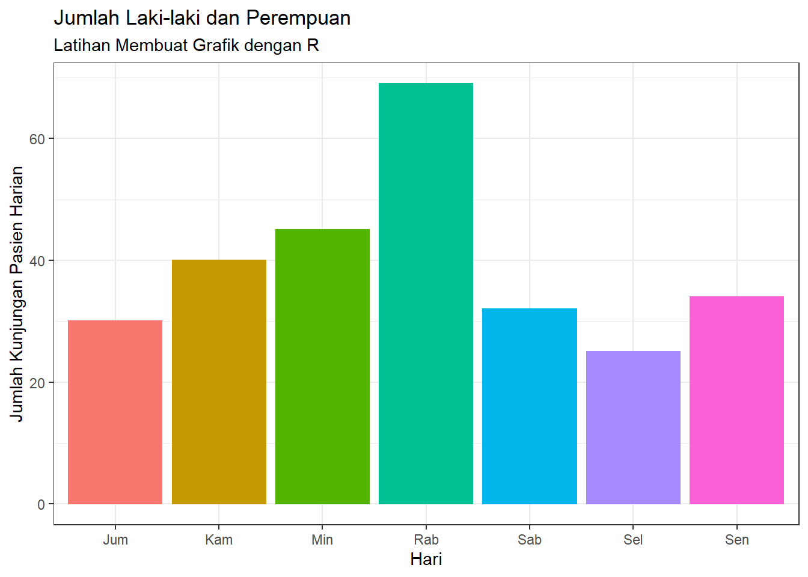
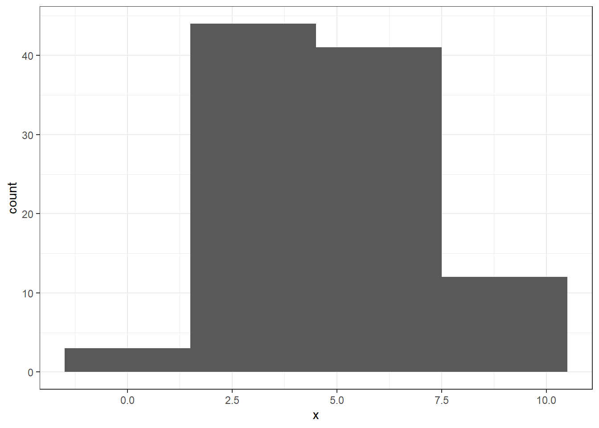
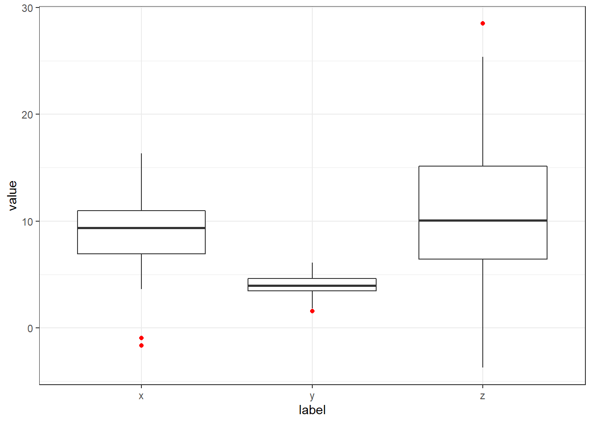

Chapter 4 Pertemuan 3: Eksplorasi Data
4.1 Statistik Deskriptif
library(tidyverse)
data_latihan <- read.csv("G:/Mandat/data_latihan.csv", sep=";")
mydata <- data_latihan %>% na.omit()
head(mydata)## tinggi berat jk
## 1 172 77 male
## 2 167 75 none
## 3 96 32 none
## 4 202 136 male
## 5 150 49 female
## 6 178 120 male4.1.1 Deskriptif
mydata %>% group_by(jk) %>% summarise(
n = n()
)## # A tibble: 4 × 2
## jk n
## <chr> <int>
## 1 female 9
## 2 hermaphroditic 1
## 3 male 44
## 4 none 44.1.2 Deskriptif Variabel Tinggi Badan
mydata %>% summarise(
rata_rata = mean(tinggi),
median = median(tinggi),
std.dev = sd(tinggi),
minimum = min(tinggi),
maksimum = max(tinggi),
jarak = range(tinggi),
n = n()
)## rata_rata median std.dev minimum
## 1 173.9483 180 35.83511 66
## 2 173.9483 180 35.83511 66
## maksimum jarak n
## 1 234 66 58
## 2 234 234 584.1.3 Deskriptif Variabel Berat Badan
mydata %>% summarise(
rata_rata = mean(berat),
median = median(berat),
std.dev = sd(berat),
minimum = min(berat),
maksimum = max(berat),
jarak = range(berat),
n = n()
)## rata_rata median std.dev minimum
## 1 98.16207 79 170.8102 15
## 2 98.16207 79 170.8102 15
## maksimum jarak n
## 1 1358 15 58
## 2 1358 1358 584.1.4 Deskriptif Statistik berdasarkan kelompok
mydata %>% group_by(jk) %>% summarise(
rata_rata = mean(tinggi),
median = median(tinggi),
std.dev = sd(tinggi),
minimum = min(tinggi),
maksimum = max(tinggi),
jarak = max(tinggi) - min(tinggi),
n = n()
)## # A tibble: 4 × 8
## jk rata_…¹ median std.dev minimum
## <chr> <dbl> <dbl> <dbl> <int>
## 1 female 169. 168 9.94 150
## 2 hermaphro… 175 175 NA 175
## 3 male 178. 183 37.0 66
## 4 none 140 132 52.0 96
## # … with 3 more variables: maksimum <int>,
## # jarak <int>, n <int>, and abbreviated
## # variable name ¹rata_rata
## # ℹ Use `colnames()` to see all variable names4.2 Visualisasi Data dengan ggplot2
Plot adalah salah satu hal mendasar yang dapat digunakan untuk menggambarkan distribusi data. Program R pun memiliki perintah - perintah untuk membuat sebuah plot. Namun perintah - perintah tersebut masih merupakan perintah yang sederhana. Hasilnya, gambar kurang menarik untuk disajikan pada khalayak umum.
ggplot2 merupakan sebuah paket yang dapat digunakan pada program R dengan cara melakukan instalasi terlebih dahulu menggunakan perintah install.package("ggplot2"). Paket ggplot2 memberikan fasilitas bagi penggunanya dalam membuat sebuah plot yang menarik untuk dilihat. Setelah anda memahami jenis-jenis plot beserta cara penggunaannya, kita dapat menggunakan paket ggpubr yang telah disusun khusus untuk kebutuhan publikasi/penerbitan.
Setelah instalasi paket ggplot2 selesai, selanjutnya kita dapat memanggil paket tersebut dengan perintah
library(ggplot2)4.2.1 Bar Plot
Grafik batang merupakan grafik yang digunakan untuk menunjukkan frekuensi dari dara. Grafik batang lebih sering digunakan untuk menunjukkan perbedaan jumlah dari data yang bertipe kategorik seperti jenis kelamin, asal daerah, status perniahan, dsb. Selanjutnya kita akan membuat sebuah grafik batang dengan menggunakan data berikut:
jpc <- c(34, 25, 69, 40, 30, 32, 45)
hr <- c("Sen", "Sel", "Rab", "Kam", "Jum", "Sab", "Min")
x <- data.frame(Hari = hr, Pasien = jpc)
x## Hari Pasien
## 1 Sen 34
## 2 Sel 25
## 3 Rab 69
## 4 Kam 40
## 5 Jum 30
## 6 Sab 32
## 7 Min 45Terdapat perintah barplot dalam R yang merupakan perintah yang sudah tersedia saat melakukan instalasi R. Walapun perintah barplot dapat kita gunakan, namun hasil yang diberikan sangat sederhana dan lebih cocok digunakan untuk sebuah laporan. Berikut adalah cara menggunakan perintah barplot:
barplot(x$Pasien,
names.arg = x$Hari)
Selanjutnya kita akan menggunakan paket ggplot2 untuk menyajikan grafik batang yang lebih menarik. Berikut adalah perintah untuk membuat grafik batang dengan menggunakan paket ggplot2:
p <- ggplot(x, aes(Hari)) +
geom_bar(aes(weight=Pasien, fill=Hari, colour=Hari)) +
labs(title = "Jumlah Laki-laki dan Perempuan",
subtitle = "Latihan Membuat Grafik dengan R") +
xlab("Jenis Kelamin") +
ylab("Jumlah Responden") +
theme_bw() +
theme(legend.position = "none")
ppenjelasan:
ggplot(x, aes(Hari))adalah perintah untuk membuat sebuah objekggplotdari variabelHaripada dataxgeom_bar(aes(weight=Pasien, fill=Hari, colour=Hari))geom_bar()adalah perintah untuk membuat grafik batang menggunakanggplotweightadalah banyak datanya (dalam kasus yang kita kerjakan: banyaknya Pasien setiap hari)fillbertujuan untuk memberi warna batang (harus sama denganaes(Hari)padaggplotagar setiap batang memiliki warna yang berbeda)colourbertujuan untuk memberi warna garis (harus sama denganaes(Hari)padaggplotagar setiap batang memiliki warna yang berbeda)
theme_bw()bertujuan untuk menentukan temablack and whitepada grafik
4.2.2 Histogram
Histogram merupakan grafik batang yang dapat menunjukkan seberapa sering suatu nilai yang berbeda terjadi. Histogram lebih sering digunakan untuk melihat distribusi dari suatu data. Berbeda dengan grafik batang, kita perlu menggunakan data numerik dalam membuat sebuah histogram. Berikut adalah data acak yang dibangkitkan dengan perintah rnorm:
data <- data.frame(x = rnorm(100,5,2))Kita dapat menggunakan perintah hist yang telah tersedia pada program R saat melakukan instalasi program R.
hist(data$x)Selanjutnya kita akan menggunakan perintah yang tersedia pada paket ggplot2.
p <- ggplot(data, aes(x)) +
geom_histogram(binwidth = 1,
color = "white",
fill= "darkred") +
theme_bw()
p
penjelasan:
ggplot(data, aes(x))adalah perintah untuk membuat sebuah objekggplotdari objekxpada datadatageom_histogram(binwidth = 1, color = "white", fill= "darkred")geom_histogram()adalah perintah untuk membuat histogram menggunakanggplotbinwidthadalah lebar dari masing-masing batangfillbertujuan untuk memberi warna batang (dalam kasus ini kita akan berikan warna yang sama untuk semua batang)colourbertujuan untuk memberi warna garis (dalam kasus ini kita akan berikan warna yang sama untuk semua garis)
theme_bw()bertujuan untuk menentukan temablack and whitepada plot
Selanjutnya bandingkan dengan histogram yang memiliki binwidth berbeda.
p <- ggplot(data, aes(x)) +
geom_histogram(binwidth = 3,
color = "white",
fill= "darkred") +
theme_bw()
p4.2.3 Pie Plot
Pie plot atau diagram lingkaran lebih sering digunaan untuk menunjukkan perbandingan antar kategori pada sebuah variabel. Berikut ini adalah data yang akan kita gunakan untuk membuat diagram lingkaran:
jumlah <- c(23, 57, 20)
label <- c("Setuju", "Tidak setuju", "Tidak tahu")
x <- data.frame(label, jumlah)Menggunakan perintah pie
pie(x$jumlah, labels = x$label)Selanjutnya berikut ini adalah perintah untuk membuat diagram lingkaran dengan menggunakan paket ggplot2
p <- ggplot(x, aes(x="", y=jumlah, fill=label)) +
geom_bar(stat = "identity")
p + coord_polar("y", start = 0)
penjelasan:
ggplot(x, aes(x="", y=jumlah, fill=label))adalah perintah untuk membuat sebuah objek ggplot dengan dataxdengan nilaiyadalah jumlah danlabelmenjadi warna pembeda di setiap nilai padaygeom_bar(stat = "identity")geom_bar()adalah perintah untuk membuat grafik batang menggunakanggplotstat = "identity"bertujuan untuk membuat grafik batang dalam bentuk stacked bar chart
coord_polar("y", start = 0)bertujuan untuk membentuk stacked pada koordinat polar mengikutiangle = ydan dimulai dari titik nolstart = 0
4.2.4 Box Plot
Box Plot dapat menggambarkan sebaran data yang bersifat numerik. Box plot dibuat dengan menggunakan nilai-nilai pada ukuran pemusatan data. Nilai-nilai tersebut ialah 1st quartile, median, 3rd quartile, dan interquartile range. Selanjutnya kita akan menggunakan 3 data berbeda yang bersebar normal untuk menunjukkan keunggulan dalam menggunakan box plot.
x <- rnorm(250, 9, 3)
y <- rnorm(250, 4, 1)
z <- rnorm(250, 11, 6)Menggunakan perintah boxplot
boxplot(x, y, z,
names = c("x", "y", "z"))
data <- data.frame(label = c(rep(c("x","y","z"),
each=250)),
value = c(x, y, z))
head(data)## label value
## 1 x 9.768197
## 2 x 13.257648
## 3 x 13.760699
## 4 x 6.209824
## 5 x 7.440133
## 6 x 11.914389Menggunakan paket ggplot2
p <- ggplot(data, aes(x=label, y=value)) +
geom_boxplot(outlier.colour = "red") +
theme_bw()
ppenjelasan:
ggplot(data, aes(x=label, y=value))adalah perintah untuk membuat sebuah objek ggplot dengan nilaivaluesebagaiydanlabelmenjadi warna pembeda di setiap nilaiymenggunaan datadatageom_boxplot(outlier.colour = "red")geom_boxplot()adalah perintah untuk membuat box plot menggunakanggplotoutlier.colour = "red"memberikan warna merah pada garis box plot (optional)
Menggunakan paket ggplot2
4.2.5 Scatter Plot
Scatter Plot (diagram pencar) merupakan grafik yang dibuat dengan tujuan untuk memasangkan 2 nilai/variabel. Diagram pencar dapat menggambarkan hubungan dari 2 nilai/variabel tersebut. Apabila titik-titik dalam diagram pencar menuju kearah kanan atas dari kiri bawah, maka terdapat hubungan yang positif dari kedua nilai/variabel begitu pula sebaliknya. Kita akan menggunakan data berikut untuk menunjukkan hubungan yang positi dan negatif dari 2 variabel.
n <- 10
r <- 0.75
library(MASS)
data_pos <- mvrnorm(n, mu=c(3, 5), Sigma=matrix(c(1, r, r, 1), nrow=2))
x_pos <- data_pos[, 1]
y_pos <- data_pos[, 2]
data_neg <- mvrnorm(n, mu=c(3, 5), Sigma=matrix(c(1, -r, -r, 1), nrow=2))
x_neg <- data_neg[, 1]
y_neg <- data_neg[, 2]Menggunakan perintah plot pada program R:
plot(y_pos, x_pos)
plot(y_neg, x_neg)Gambar pertama menunjukkan adanya hubungan yang positif pada pariabel y_pos dan x_pos. Sedangkan pada gambar kedua adalah sebaliknya, yaitu hubungan yang negatif. selanjutnya kita akan membangun diagram pencar menggunakan paket ggplot2.
data_pos <- data.frame(data_pos)
colnames(data_pos) = c("x","y")
p <- ggplot(data_pos, aes(x,y))
p + geom_point(size=2) +
geom_smooth(method=lm) +
theme_bw()## `geom_smooth()` using formula 'y ~ x'penjelasan:
data_posadalah objek yang memuatdata_posbaru setelah diubah kedalam bentukdata framecolnames()adalah perintah untuk memberikan nama kolom/variabel padadata frameggplot(data_pos, aes(x,y))adalah perintah untuk membuat sebuah objek ggplot dengan nilaivaluesebagaiydanlabelmenjadi warna pembeda di setiap nilaiymenggunaan datadatageom_point()adalah perintah untuk membuat diagram pencarsize=2adalah perintah untuk mengubah ukuran titik diagram pencar menjadi sebesar 2 poin
geom_smooth(method=lm)adalah perintah untuk membuat garis regresi linier sebagai penegas hubungan antara 2 variabel (optional)
4.2.6 Line Plot
x <- c(23, 57, 20)
names(x) <- c("Setuju", "Tidak setuju", "Tidak tahu")Menggunakan perintah pie
plot(x, type = "o")4.2.7 Area Plot
data("diamonds")
head(diamonds)## # A tibble: 6 × 10
## carat cut color clarity depth table price x y z
## <dbl> <ord> <ord> <ord> <dbl> <dbl> <int> <dbl> <dbl> <dbl>
## 1 0.23 Ideal E SI2 61.5 55 326 3.95 3.98 2.43
## 2 0.21 Premium E SI1 59.8 61 326 3.89 3.84 2.31
## 3 0.23 Good E VS1 56.9 65 327 4.05 4.07 2.31
## 4 0.29 Premium I VS2 62.4 58 334 4.2 4.23 2.63
## 5 0.31 Good J SI2 63.3 58 335 4.34 4.35 2.75
## 6 0.24 Very Good J VVS2 62.8 57 336 3.94 3.96 2.48Note: data diamonds adalah data yang sudah tersedia dalam program R
Menggunakan paket ggplot2
p <- ggplot(diamonds, aes(x = price, fill = cut))
p + geom_area(stat = "bin")## `stat_bin()` using `bins = 30`. Pick better value with `binwidth`.